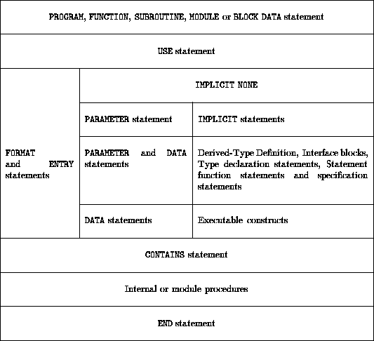

Next: Data Objects
Up: Language Elements
Previous: Comments
Fortran has some quite strict rules about the order of statements.
Basically in any program or procedure the following rules must be
used:
- The program heading statement must come first, (PROGRAM,
FUNCTION or SUBROUTINE). A PROGRAM statement is optional but
its use is recommended.
- All the specification statements must precede the first executable
statement. Even though DATA statements may be placed with
executable text it is far clearer if they lie in the declaration area.
It is also a good idea to group FORMAT statements together for
clarity's sakes.
- The executable statements must follow in the order required by the
logic of the program.
- The program or procedure must terminate with an END statement.
Within the set of specification statements there is relatively little
ordering required, however, in general if one entity is used in the
specification of another, it is normally required that it has been
previously defined.
In other words, named constants (PARAMETER s) must be declared before
they can be used as part of the declaration of other objects.
The following table details the prescribed ordering:

Execution of a program begins at the first executable statement of the
MAIN PROGRAM, when a procedure is called execution begins with
the first executable statement after the invoked entry point. The
non-executable statements are conceptually `executed' (!) simultaneously
on program initiation, in other words they are referenced once and
once only when execution of the main program begins.
There now follows a explanation of the table,
- There can be only 1 main PROGRAM,
- there may be many uniquely named FUNCTION s and SUBROUTINE s
program units (procedures).
- there may be any number of uniquely named MODULE s which are
associated with a program through a USE statement. Modules are very
flexible program units and are used to package a number of facilities
(for example, procedures, type definitions, object declarations, or
semantic extensions). Their use is very much encouraged and they replace
a number of unsafe features of FORTRAN 77.
- There can be only one BLOCK DATA subprogram -- these will not
be described as part of this course -- their purpose is to define
global constants or global initialisation and this is best done by a
MODULE and USE statement.
- USE statement:
This attaches a module whose entities become use-associated with
the program unit. When a module is used its public contents are accessible as
if they had been declared explicitly in the program unit. Modules may
be pre-compiled (like a library) or may be written by the programmer.
Any global entities should be placed in a module and then used whenever
access is required.
- The IMPLICIT NONE statement should be placed after a USE statement.
Its use is implored.
- FORMAT and ENTRY statements. Format statements should be grouped
together somewhere in the code. ENTRY statements provide a mechanism
to `drop' into a procedure halfway through the executable code. Their
use is outmoded and strongly discouraged due it its dangerous nature.
- PARAMETER statement and IMPLICIT statement:
IMPLICIT statements should not be used, IMPLICIT NONE should be
the only form of implicit typing considered. (IMPLICIT statements
allow the user to redefine the implication of an object's first letter
in determining what its implicit type will be if it is not declared.
Cannot have an IMPLICIT statement if there is an
IMPLICIT NONE line.)
PARAMETER statements, it is suggested that the attributed (Fortran 90) style of
PARAMETER declaration be used.
- DATA statements should (but do not have to) be placed in the
declaration, common practice puts them after the declarations and
before the executables.
- Interface blocks are generally placed at the head of the declarations
and are grouped together.
Statement functions are a form of in-line statement definition,
internal procedures should be used instead.
- executable statements are things like DO statements, IF
constructs
and assignment statements.
- CONTAINS separates the ``main'' program unit from any
locally visible internal procedures.
- the internal procedures follow the same layout as a (normal)
procedure except that they cannot contain a second level of internal
procedure.
- the END statement is essential to delimit the current program
unit.
Next: Data Objects
Up: Language Elements
Previous: Comments
Adam Marshall ©University of Liverpool, 1996
Tue Nov 26 17:50:42 GMT 1996